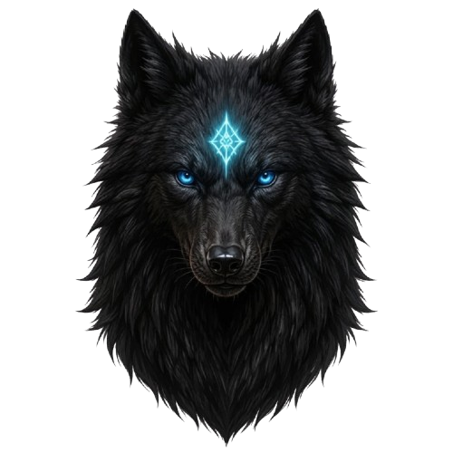
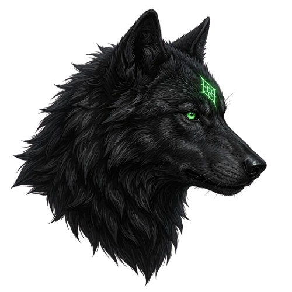

Галерея


.png)
Эстетика. Карточки. Арты.
Арты / визуал — обитель
Эстетика — символ Трикефала
Игнис
ХарактерВспыльчивый и безжалостный — первым бросается вперёд, не зная сомнений.
РольГолос гнева. Первым чувствует угрозу и первым отвечает на неё.
ОсобенностиДыхание обжигает воздух, глаза — как тлеющие угли, никогда не смыкает их.
«Пепел помнит того, кто зажёг огонь.»

Аркес
ХарактерАркес — воплощение ледяного абсолюта разума. Его не вывести из себя провокацией, не сбить с толку хаосом. Аркес мыслит наперёд, каждый шаг просчитан, каждый жест несёт смысл, каждое слово взвешено. Он не знает страсти, но знает цель. И если Игнис — огонь, то Аркес — лёд, в котором этот огонь заключён и направлен.
РольМозг и стратег, способный направить силы в нужное русло и вовремя оказать защиту.
ОсобенностиОн наблюдает, анализирует, выстраивает схемы и только потом действует. Он не терпит импровизации и слабости. В бою он не наносит ударов первым — он ждёт, когда противник раскроется, и наносит один, но идеальный удар.
«Хаос — это всего лишь порядок, который я ещё не расшифровал.»

Нокс
ХарактерОн — воплощение сакральной привязанности и нерушимой верности. Нокс — тихая гавань, но при этом абсолютная сила, которая держит троицу в едином целом. Он служит не просто нитью, а канатом между головами. Он не ищет конфликтов, но никогда не отступает и не оставит остальных.
РольНевидимая скрепа, без которой троица распалась бы на три враждующих осколка. Его задача — сохранять единство, гасить внутренние конфликты и держать гармонию.
ОсобенностиНокс обладает уникальным даром — он чувствует. И даже в самые опасные моменты он не боится тушить огонь в лицах других.
«Огонь и лёд могут сражаться вечность, но я та тишина, в которой они мирятся.»